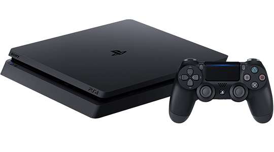

Octava Generación 2012 - 2020
En la historia de los videojuegos, la octava generación de videoconsolas es un término que describe la generación de consolas de videojuegos que sucede a la séptima generación (PlayStation 4 de Sony, Wii U de Nintendo y Xbox One de Microsoft) también se incluyen las unidades de juegos portátiles lanzado en el marco de tiempo similar e incluso debutan algunas compañías con una nueva consola de videojuegos. Lo destacable de esta generación es el uso de internet como eje central de la funcionalidad de las consolas, esto convertidos en centros de comunicación juntando en un único aparato las funciones de sistema de juegos y bazar de venta de películas, series de TV y otros contenidos desde la propia consola.
PlayStation Vita
También conocida como PS Vita, es la tercera y última videoconsola portátil creada por Sony Computer Entertainment. El sistema presenta una forma ovalada similar al diseño de la primera PSP y es la primera en tener dos joysticks, con una pantalla de cinco pulgadas OLED capacitativa localizada en el centro del sistema. Tiene un par de palancas analógicas (una a cada lado de la pantalla), un pad, los cuatro botones clásicos de la PlayStation

PlayStation 4 ps4
Es la cuarta videoconsola del modelo PlayStation. Alejándose de la compleja arquitectura utilizada en el procesador Cell de la videoconsola PlayStation 3, la PlayStation 4 cuenta con un procesador AMD de 8 núcleos bajo la arquitectura x86-64.
Xbox One
Es la tercera videoconsola de sobremesa de la marca Xbox, producida por Microsoft. Forma parte de las videoconsolas de octava generación. Xbox One cuenta con una GPU integrada basada en la tecnología de AMD y la equivalente a una HD 7790, 10 veces más potente que su Predecesora Xbox 360. Su GPU dispone de 768 Shaders y 1,23 TFLOPS/s de potencia

wiiu
Es una consola perteneciente a la octava generación de videoconsolas,siendo la séptima de sobremesa creada por Nintendo y directa sucesora de Wii. Wii U es la primera consola de Nintendo en producir gráficos en alta definición hasta una resolución de 1080p. Incluye un nuevo mando que incorpora una pantalla táctil que recibe señal en calidad 480p de la consola, lo que permite seguir jugando incluso cuando el televisor está apagado.

Nintendo Switch
Nintendo considera a Switch una consola híbrida. Se puede utilizar como consola de sobremesa con la unidad principal insertada en una estación de acoplamiento para conectarla con un televisor. Alternativamente, puede ser extraída de la base y utilizada de forma similar a una tableta a través de su pantalla táctil LCD, o colocada sobre una superficie gracias a su soporte plástico.